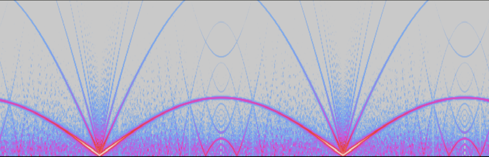

Homework 1: Hand-Crafted Digital Audio
Music 220a Homework 1, Spring 2021
Hand-Crafted Digital Audio
Sebastian James
Reflection for Part 1:
I find that when looking at spectrograms of the waveforms, translating
between sound and sight when it comes to frequency is easy. For example,
when looking at the noise spectrograms, it is intuitive that all frequencies
are represented concurrently in the sound, relating in a “fuzzy” sound and a
“fuzzy” image. Furthermore, when looking at the noise spectrogram with the
low pass filter, the higher frequencies are gradually filtered out as the
resonance filter frequency sweeps low to high; again, this is logical to
translate between sight and sound. Part 1b, which has the noise chucked
through an ADSR envelope, surprised me. The attack and delay were faster
than I thought, with the sustain lasting much longer that what can be heard
in the waveform. Seeing this graphical representation of the ADSR envelope
helped illustrate to me the scale factor size of each element of the
envelope. However, parts 1f, 1g, and 1h have more complex spectrograms. That
is why I chose the spectrogram of the square oscillator as the most
interesting. The harmonics built upon the fundamental frequency create an
artistic spectrogram which resembles modern graphical art. When listening to
the waveform, this is reflected in the wobbly harmonic signals we can hear
in the background.
Something I should add is that I wrote two versions of the noise with filter
sweep. In one version, I swept the resonance filter frequency manually,
WITHOUT sporking, and in the second version, I wrote the code to sweep the
resonance filter frequency in a separate function which I sporked to run
concurrently to the noise UGen. I found that the second version which
sporked the filter frequency gave a smoother transition sweeping from a low
frequency cutoff, to a high frequency cutoff, and back to the low end.
When reflecting on the spectrograms and listening to their respective
waveforms, I found that understanding what I saw in the spectrograms helped
me better understand the code I wrote. Furthermore, once I was better
acquainted with the spectrograms of certain waveforms, I was able to “hear”
the code as I was writing it and chucking different oscillators through
filters, parameters, and effects, which allowed me to be more creative in
later parts of the homework.
Screenshot for Part 1 from 1f-SqrOsc:

Links:
Part 1:
Part 2:
Part 3:
Part 4:
Part 5: If Gregorian Composition was 220A.
For my short form musical statement, I first built a repeating
i-VI-III-(minor)v-i chord progression using the square oscillator played
through an ADSR envelope and a reverb. I chose this combination because it
gave the most “musical” timbre in my opinion as opposed to a different UGen
such as a sine oscillator, or my homemade sample. I chose this specific
chord progression for its somber emotion which paired perfectly with the
Paulstretch voicemail recording which plays as a soundscape in the
background. Finally, I used my homemade sample to fill up space on top of
the chords and voicemail. The sample is played at one pitch, but with a
varying gain. This pitch gave the most consonance as compared to the chords.
I sporked the functions to play the voicemail and the homemade sample filler
so that they would run concurrently with the chord progression. Furthermore,
the sample is played through a sweeping LPF to give a more instrumental and
mellow feel to the rather harsh output of an Impulse UGen. 1 minute of audio
was recorded and uploaded for the homework.